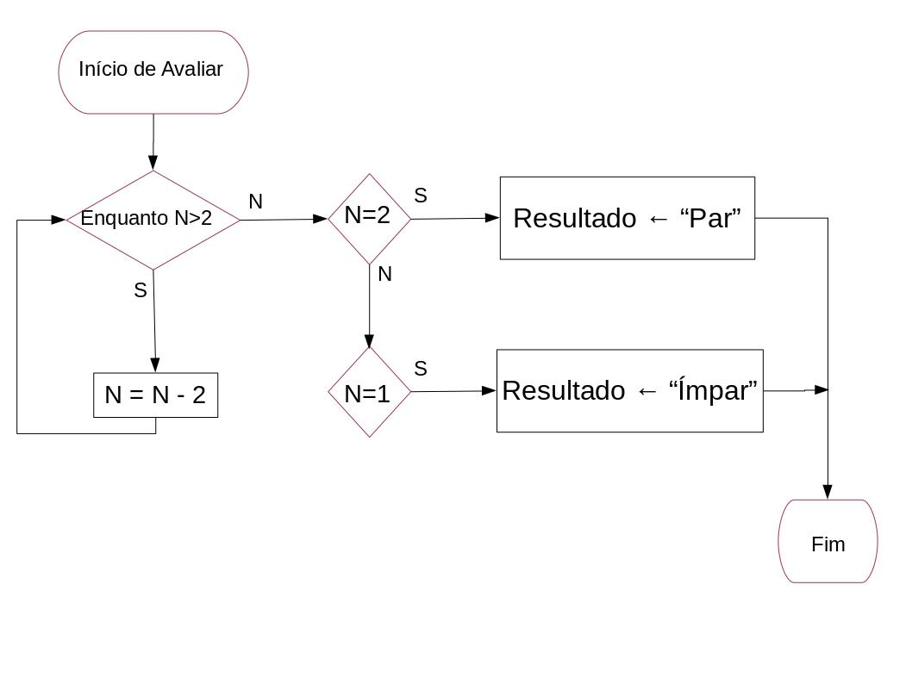

Criação de soluções¶
Hoje vamos ver algumas técnicas para criar soluções mais robustas, aproveitando para consolidar o que já vimos de programação, nomeadamente:
as etapas para a criação de uma solução
os algoritmos e a sua representação através de pseudo-código e fluxogramas
as várias vertentes da resolução de problemas computacionais
a documentação e testes
uso de asserções
os módulos e as soluções modulares
instruções para considerar casos excecionais
Objetivos de aprendizagem¶
No final deste capítulo devemos ser capazes de:
identificar e definir as etapas necessárias para a criação de uma solução computacional
desenvolver algoritmos usando pseudo-código e fluxogramas
gerir as várias vertentes da resolução de problemas no desenvolvimento de uma solução computacional
gerar a documentação necessária no desenvolvimento de uma solução computacional
usar asserções para garantir condições durante a execução
criar e usar módulos no desenvolvimento de uma solução computacional
usar as instruções try e except
Criação de uma solução computacional¶
Identificar o problema
Análise do problema
Formulação de um algoritmo para resolver o problema
Descrição do algoritmo de forma simples, eventualmente escrevendo o programa
Execução ou validação
Solução
A qualidade de uma solução computacional (6) está pois associada à escolha do algoritmo (3).
Algoritmo¶
Um algoritmo é uma sequência precisa de operações ou atividades que resolvem um problema num tempo finito.
Um programa (ou script) é a expressão de um algoritmo usando uma linguagem de programação.
Juntando tudo isto, na resolução de problemas, tradicionalmente identificavam-se as fases:
Fase de Análise: decidir o que temos que fazer.
Fase de Desenho (conceção de uma solução): decidir como se fará, é o desenvolvimento do algoritmo.
Uma abordagem popular é TOP-DOWN, onde um problema complexo se resolve dividindo o problema em subproblemas, e assim sucesivamente até que a resolução de um problema seja de fácil solução.
Caraterísticas desejáveis de um algoritmo¶
Terminar sempre
Concreto e sem ambiguidade
Simples e, se tiver várias etapas, com ordem de aplicação definida
Funcionar sempre, independentemente dos dados de entrada (eficaz)
Factível
Independente da linguagem de programação e plataforma de implementação
Fase de Codificação: a implementação do algoritmo numa linguagem de programação adequada.
Fase de Testes: não basta terminar o programa; há que garantir que o programa não falha e funciona para todos os casos possíveis.
Fase de Documentação: produzir a documentação do programa, facilitando a reutilização futura bem como eventuais alterações.
A abordagem que nós usamos na fase de análise é decompor o nosso problema:
em pequenas unidades, que identificamos com uma função, com nome mas vazia
descrevemos sucintamente o objetivo na documentação
esboçamos os testes para definir o que cada função deve fazer.
Como descrever soluções¶
Numa abordagem inicial, é frequente sugerir-se o uso de:
pseudocódigo para enunciar o algoritmo
diagramas de fluxo para visualização do algoritmo
Exemplo de pseudo-código¶
Paridade (número n)
Início:
Avaliar:
se n = 2
escreve "Par"
Vai para Fim
senão
se n = 1
escreve "Ímpar"
Vai para Fim
senão
n = n - 2
Vai para Avaliar
fim se
fim se
Fim: Termina

{kind=link}
{kind=link}
{kind=link}
{kind=link}
Exercícios propostos¶
Como faria (pseudo-código ou fluxograma) para:
Troca
Em \(a\) e \(b\) tenho duas quantidades em que \(a > b\). Pretendo garantir que \(a < b\).
Enumeração
Tenho uma coleção de elementos. Pretendo saber quantos elementos contém.
Tenho uma coleção de elementos. Pretendo examiná-los todos.
Acumulação
Tenho uma coleção de elementos. Pretendo o valor do somatório.
Ordenação
Tenho uma coleção de elementos. Pretendo que o conjunto fique ordenado crescentemente.
Procura
Tenho uma coleção de elementos. Pretendo saber se determinado elemento existe.
Codificação, testes e documentação¶
O conceito de programação imperativa (ou declarativa) é um estilo de programação em que a atividade de um computador é orientada por instruções.
Essas instruções traduzirão então as ordens a cumprir, seja ler, escrever, somar, repetir até entre outras.
Normalmente a programação imperativa deseja-se estruturada em atividades bem delimitadas, que se pretendem simples e pequenas (Keep it simple, keep it small).
Na programação estruturada tipicamente ocorre a leitura de dados, o processamento e a escrita de resultados. O processamento é organizado numa sequência de atividades, cada uma delas concretizada por pequenos conjuntos de instruções (procedimentos ou funções).
Exemplo: paridade¶
Como exemplo de um algoritmo, foi referido o teste de paridade de um número. No caso geral teríamos:
Exemplo de pseudo-código¶
Início:
Ler dados
Avaliar se é par
Escrever resultado
Fim: Termina
Ler os dados e escrever os resultados é normalmente o mais simples.
Ler dados:
pedir entrada
enquanto entrada inválida
pedir entrada
fim enquanto
Escrever resultado:
mostrar resultado
Avaliar a paridade pode ser feito de várias maneiras. Como tínhamos à pouco:
Avaliar:
se n = 2
resultado é "Par"
senão
se n = 1
resultado é "Ímpar"
senão
n = n - 2
Avaliar
fim se
E como implementamos a função avaliar? De forma recursiva ou iterativa?
A abordagem pretentida (iterativa ou recursiva) pode ficar clara na definição do algoritmo. Assim:
ou seja:
Avaliar:
enquanto n > 2
n = n - 2 < == iterativo
fim enquanto
se n = 2
resultado é "Par"
senão
resultado é "Ímpar"
fim se
Codificação e documentação¶
E como ficaria em Python?
Vamos incluir a documentação, usando uma docstring mais completa e garantindo a qualidade do bloco de código usando asserções (assert). Considere a função na forma que a seguir se apresenta, com erro na terceira linha de documentação.
def paridade_2 (n):
""" Função que determina se um número natural positivo é par ou ímpar.
Argumento:
n (int): número a avaliar
Devolve:
str: "Par" ou "Ímpar"
Exemplos:
>>> paridade_2 (3)
'Ímpar'
>>> paridade_2 (4)
'Par'
>>> paridade_2 (25)
'Par'
"""
assert type(n) is int, "n não é um inteiro: %r" % n
assert n >0, "n não é maior que zero: %r" % n
while (n>2):
n = n-2
if (n == 2):
resultado = 'Par'
else:
resultado = 'Ímpar'
return resultado
paridade_2(5)
'Ímpar'
paridade_2(4)
'Par'
Para verificarmos que a função poderíamos fazer
import doctest
doctest.testmod()
paridade_2(4)
**********************************************************************
File "__main__", line 15, in __main__.paridade_2
Failed example:
paridade_2 (25)
Expected:
'Par'
Got:
'Ímpar'
**********************************************************************
1 items had failures:
1 of 3 in __main__.paridade_2
***Test Failed*** 1 failures.
'Par'
# Garantimos que a função não é usada de forma incorreta.
# Retire o comentário da próxima linha para ver o erro.
# paridade_2(5.0)
# Garantimos que a função não é usada de forma incorreta.
# Retire o comentário da próxima linha para ver o erro.
# paridade_2(-3)
help(paridade_2)
Help on function paridade_2 in module __main__:
paridade_2(n)
Função que determina se um número natural positivo é par ou ímpar.
Argumento:
n (int): número a avaliar
Devolve:
str: "Par" ou "Ímpar"
Exemplos:
>>> paridade_2 (3)
'Ímpar'
>>> paridade_2 (4)
'Par'
>>> paridade_2 (25)
'Par'
Note que o uso de asserções não dispensa a validação dos dados.
Quando uma asserção não se verifica, o programa termina de forma abrupta, em erro, e isso não é adequado.
Mas as funções que são feitas podem ser usados noutros contextos, que não o do programa inicial. O uso de asserções ajuda a criar soluções mais robustas, pois numa função podemos verificar que as condições necessárias para a sua utilização.
Desenvolvimento de soluções modulares¶
Quando os problemas computacionais se tornam mais complexos, o código do programa tende a ficar muito longo. No entanto, o desenvolvimento de uma solução computacional não implica que todo o código esteja no mesmo ficheiro e pode estar dividido por vários scripts.
Dividir o programa em várias partes tem grandes vantagens:
maior facilidade em testar a funcionalidade das várias partes do problema,
maior facilidade na manutenção do programa através de alterações, atualizações, etc.,
possibilidade de reutilização destes módulos na solução de outros problemas.
Assim, quando criamos uma solução mais complexa podemos dividir o problema criando vários scripts que contêm as várias partes da solução e depois, usando a funcionalidade import do Python, reunimos essas partes.
Exemplos¶
math¶
Usando o módulo math como exemplo, e assumindo que pretendemos a função cosseno e \(\pi\),
As opções são:
import math
math.cos(math.pi/4)
ou
from math import *
cos(pi/4)
ou ainda
from math import pi, cos
cos(pi/4)
É de notar que há uma diferença entre executar import math e from math import *. Embora em ambas as situações estejamos a importar o módulo todo, na última não é necessário prefixar as funções com o nome do módulo (math).
Temperaturas¶
Consideremos o tema da conversão de unidades de temperatura e que no ficheiro temperaturas.py temos todas as funções para as conversões de temperatura.
Para usarmos essas funções noutros programas podemos fazer
import temperaturas
for x in range(0, 100, 20):
print('fahrenheit: {0:2} --> kelvin: {1:.3}'.format(x, temperaturas.f2k(x)))
fahrenheit: 0 --> kelvin: 2.55e+02
fahrenheit: 20 --> kelvin: 2.66e+02
fahrenheit: 40 --> kelvin: 2.78e+02
fahrenheit: 60 --> kelvin: 2.89e+02
fahrenheit: 80 --> kelvin: 3e+02
ou
from temperaturas import f2k
for x in range(0, 100, 20):
print('fahrenheit: {0:2} --> kelvin: {1:.3}'.format(x, f2k(x)))
fahrenheit: 0 --> kelvin: 2.55e+02
fahrenheit: 20 --> kelvin: 2.66e+02
fahrenheit: 40 --> kelvin: 2.78e+02
fahrenheit: 60 --> kelvin: 2.89e+02
fahrenheit: 80 --> kelvin: 3e+02
Exceções¶
Já vimos vários casos em que o Python devolve mensagens de erro. Por vezes queremos intercetar o erro por forma a não permitir que o programa termine por sua causa ou, se terminar, que não haja mensagens de erro. Esta interceção pode ser conseguida através das instruções try e except.
Estas instruções são normalmente divididas em blocos: o bloco do try e o bloco (ou blocos) do except. No bloco do try incluímos as instruções que poderão dar origem a erros. Nos blocos do except indicamos quais os erros que desejamos tratar e incluímos o modo como lidamos com este erros.
Para exemplificarmos considere o seguinte programa que deve ser guardado num ficheiro chamado test_try_except.py,
""" Função fatorial - teste à instrução try-except """
import sys
def fatorial_r(n):
"""Calculo do fatorial de um número.
n! = n * (n-1)! para n > 1
"""
assert type(n) is int, "n não é um inteiro: %r" % n
assert n>0, "n não é maior que zero: %r" % n
resultado = 1 # Elemento neutro da multiplicação
if (n>1):
resultado = n * fatorial_r(n-1)
return resultado
def test_try_except():
"""Exemplo de uso de try-except"""
while True:
try:
x = int(input('Insira um número inteiro: '))
z = fatorial_r(x)
print('O fatorial de {} é {}'.format(x,z))
except KeyboardInterrupt:
print('\n Terminado.')
sys.exit(0)
except ValueError:
print('Tente novamente.')
except EOFError:
print('\n Fim dos dados. Terminado.')
sys.exit(0)
# Retire o sinal de comentário das linhas abaixo para ensaiar este exemplo.
#if __name__ == '__main__':
# test_try_except()
Note:
lê vários elementos
distingue duas formas de terminação do programa
interceta a entrada se não puder ser convertida para inteiro
a função não pode ser chamada com valores negativos